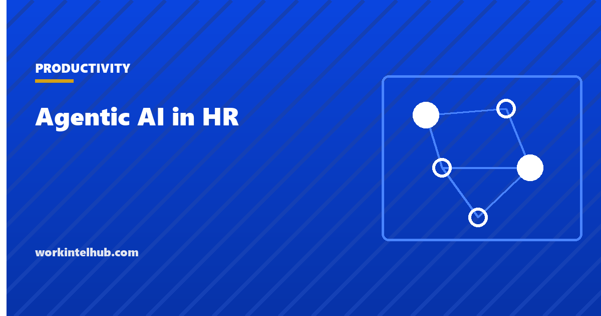

Agentic AI in HR

An AI agent for HR is a system that plans and carries out multi-step HR work on its own, inside guardrails you set, instead of waiting for a prompt at every step. That is the one distinction separating a real agent from every "AI in HR" claim of the last three years. A chatbot that answers a benefits question is not an agent. A system that reads a leave request, checks it against policy and team coverage, approves or escalates it, and updates the HRIS without a human clicking anything is an agent.
This guide covers what agentic AI actually means, how it differs from the automation HR has used for a decade, where it is genuinely useful today, and where the hype has run ahead of the results.
What is agentic AI?
Agentic AI is software built to pursue a goal across multiple steps, using memory of what it has already done, a plan for what to do next, and the ability to take real actions through other systems, rather than just producing a reply. PwC's Strategy& breaks the practical value into three layers: automating repetitive rule-based steps, augmenting a human decision with real-time analysis, and orchestrating an entire workflow across systems end to end. That third layer is what makes it agentic rather than another automation script.
Generative AI and agentic AI get conflated constantly, and the difference matters more than the marketing suggests. A generative tool, including the chatbots most HR teams already use, responds when prompted and stops. Agentic AI keeps going: it decides the next step, executes it through a connected system, checks the result, and adjusts if something does not match the plan.
That gap is wide enough that vendors have started overusing the word. A quick way to tell the difference: a real agent remembers earlier interactions, handles an unexpected input without breaking, and takes the next step on its own instead of waiting to be asked. If a vendor's agent fails all three, you are buying a chatbot with better branding.
What are AI agents for HR?
AI agents for HR are agentic systems purpose-built to plan and execute HR tasks: sourcing and screening candidates, routing employee questions, running onboarding checklists, flagging attrition risk, or approving routine requests against policy. They sit on top of your existing stack, an ATS, an HRIS, a payroll system, and act inside it rather than replacing it.
The distinction that matters for a buying decision is scope. An AI HR assistant answers questions. An AI agent completes a workflow that used to require a person to open three different systems. Many tools available today sit somewhere between the two, which is why it is worth evaluating what a product actually does rather than what a demo shows.
How AI agents work in HR
Every functioning HR agent is built from the same four components, whether it is screening resumes or approving PTO.
- Perception. It reads structured and unstructured HR data: applications, tickets, calendar availability, HRIS records, prior conversation history.
- Planning. It breaks a goal, fill this requisition, resolve this leave request, into an ordered set of steps, using a language model as the reasoning layer.
- Action. It executes those steps through tool calls and API connections into your ATS, HRIS, calendar or messaging platform, not just by generating text.
- Memory and guardrails. It retains context across steps and sessions, and operates inside limits you define: which decisions it makes outright, which need sign-off, and what it may never touch.
In recruiting that loop looks like: parse a resume, score it against the requisition, shortlist the top candidates, draft interview invitations, and route anything ambiguous to a recruiter instead of guessing. The agent is not answering one question. It is running a process and stopping only where you told it to.
Traditional HR automation vs agentic AI
"We already automated that" is the most common objection when a vendor pitches agentic AI, and it deserves a real answer.
| Traditional automation (RPA, rules engines) | Agentic AI | |
|---|---|---|
| Trigger | Fixed event: form submitted, date reached | A goal, then the agent decides the steps |
| The unexpected | Breaks or escalates on anything outside the rule | Adapts the plan, replans, or asks for input |
| Decision-making | None; follows a fixed if-then path | Weighs options against context and prior outcomes |
| Memory | Stateless between runs | Retains context across steps and sessions |
| Oversight | Set once, monitored occasionally | Ongoing guardrails and audit review |
| Example | Auto-reject any application missing a required field | Review a borderline application, request the missing detail, then re-score it |
Traditional automation is a calculator: it does exactly what it was programmed to do. Agentic AI is closer to a junior employee given a goal who makes decisions along the way. That is precisely why it needs more oversight, not less, particularly early on.
What they are actually good at
- Speed on high-volume, low-risk work. Screening, scheduling and policy questions that took a coordinator hours can run continuously.
- Consistency. An agent applies the same criteria to the 500th application as to the first, which a tired reviewer at four on a Friday does not always manage.
- Coverage outside business hours. Routine requests get handled when they arrive rather than the next working day.
- Freed-up time for judgement work. Every hour an agent spends scheduling is an hour a recruiter spends on a hard conversation or a close call.
Interest is real. Per Gartner's CHRO Priorities research for 2026, 82 per cent of HR leaders planned to deploy some form of agentic AI within twelve months, and Gartner projects that by 2028, 30 per cent of recruiting teams will use AI agents for high-volume hiring and early-stage tasks.
Adoption is running well ahead of measurable results, though. Gartner reported that while 95 per cent of CHROs had adopted some form of AI in HR by the end of 2025, nearly three-quarters said the business value delivered so far was only moderate or minimal.
The sharpest warning is separate: Gartner predicted in June 2025 that over 40 per cent of agentic AI projects would be cancelled by the end of 2027, citing escalating costs, unclear business value and inadequate risk controls. Read that as a reason to scope one workflow narrowly rather than as a reason to wait.
Five use cases, and where each one fails
1. Candidate sourcing and screening. Agents parse resumes, score against requisition criteria and shortlist automatically.
Where it fails: criteria trained on historical hiring data can replicate past bias, which is what New York City Local Law 144 was written to catch. The compliance detail is in the section below, and the scope is narrower than most summaries claim.
2. Interview scheduling and coordination. Agents check availability, book interviews and send reminders across time zones.
Where it fails: double bookings and missed context, such as a candidate's scheduling constraint mentioned in an email the agent never ingested, when it is not connected to every relevant system.
3. Onboarding orchestration. An agent can trigger IT provisioning, benefits reminders and training assignments the moment an offer is signed.
Where it fails: onboarding run entirely by an agent reads as impersonal in a new hire's first week, which is the moment human contact matters most for retention.
4. Employee self-service and policy questions. Agents resolve routine questions about leave balances, benefits and policy without a ticket.
Where it fails: it will answer confidently from a policy that is unclear, outdated or recently changed. The agent is only as current as the document it reads, which makes policy hygiene a prerequisite rather than a nice-to-have.
5. Attrition risk flagging. Agents watch engagement signals, workload and tenure to flag elevated flight risk early.
Where it fails: scores built on incomplete signals mislabel people, and using the score itself as a performance input crosses directly into the surveillance problem covered in our ethical monitoring playbook and our page on what monitoring should never collect.
The compliance rules that apply before you switch one on
Two US jurisdictions regulate this directly today, and both are commonly misdescribed.
New York City. New York City Local Law 144 governs automated employment decision tools. The tool must have had a bias audit within the previous year, a summary of the results must be published on your careers or jobs site, and candidates must be given at least ten business days' notice before it is used, with a route to request an alternative process.
The scope is the part that gets stated wrongly. The law follows the location of the job, not where the candidate happens to live. A role tied to New York City, including a remote position associated with an NYC office, is covered no matter where your company is headquartered. Penalties run to $500 for a first violation and up to $1,500 for each subsequent one, and every day a tool is used without a valid audit counts separately, so they accumulate quickly.
Illinois. Illinois HB 3773 amended the Illinois Human Rights Act with effect from 1 January 2026. It makes it a civil rights violation to use AI that discriminates in recruitment, hiring, promotion, discipline, discharge or the terms of employment, expressly bars using zip code as a proxy for a protected class, and requires notice to applicants and employees when AI is used in a covered decision. Our page on Illinois workplace privacy law covers the neighbouring statutes, including BIPA, which applies if any part of your process touches face or voice analysis.
Beyond these, an agent that reads employee activity data is monitoring, and four states now require written notice of electronic monitoring before it starts. Our state-by-state guide sets out the duty, and the acknowledgement form has wording that covers it.
Best practices
- Start with one narrow, high-volume workflow. A single well-defined process lets you measure honestly and limits the blast radius of a mistake.
- Keep a human in the loop on anything high-stakes. Termination, compensation, promotion and any decision covered by employment law should never be fully autonomous. Route them for sign-off every time.
- Demand an audit trail. You need to answer "why did the agent do that" for any action, not just see the output. Without a record of how a decision was reached it cannot be explained, reviewed or defended.
- Vet for agentic-washing before you buy. Ask the vendor to demonstrate live that the tool remembers context across a multi-step task, handles an input you did not warn them about, and takes the next action unprompted. If it cannot do all three, it is a chatbot.
- Check compliance before deployment, not after. Confirm your obligations with counsel first. The NYC notice period alone is ten business days, so it cannot be retrofitted the week you go live.
- Measure a business outcome. Time-to-fill, ticket resolution time, escalation rate. Implementing an agent is not a result.
One limitation is worth stating plainly. Most agentic deployments in HR are still pilots on narrow tasks, and the Gartner findings above show adoption far ahead of realised value. That is not an argument against it. It is an argument for picking one measurable problem instead of treating agentic AI as a strategy.
Key takeaways
- Agentic AI plans and executes multi-step work inside guardrails. A chatbot that answers one question and stops is not an agent.
- AI agents for HR sit on top of your ATS, HRIS and payroll and complete workflows rather than responding to prompts.
- Traditional automation follows a fixed rule. Agentic AI adapts its plan, which is exactly why it needs more oversight, not less.
- The strongest current use cases are high-volume and low-risk: screening, scheduling, onboarding logistics, policy questions and attrition flagging.
- Gartner found 82 per cent of HR leaders planned to deploy agentic AI within twelve months, while nearly three-quarters of CHROs rated the value delivered so far as moderate or minimal.
- Gartner also predicted over 40 per cent of agentic AI projects would be cancelled by the end of 2027, on cost, unclear value and weak risk controls.
- NYC Local Law 144 follows the location of the job, not where the candidate lives. Audit within a year, published summary, ten business days' notice.
- Illinois HB 3773 took effect on 1 January 2026 and requires notice when AI is used in a covered employment decision.
Frequently asked questions
What is the difference between AI agents and agentic AI?
They describe the same technology from two angles. Agentic AI is the term for the paradigm: systems with memory, planning and autonomous execution. AI agents is how people refer to the tools built on it. An AI agent for HR is agentic AI applied to a specific HR workflow.
Is agentic AI the same as generative AI?
No. Generative AI produces a response to a prompt and stops. Agentic AI uses generative models as a reasoning layer but goes further: it decides the next step, acts through connected systems, and continues toward a goal without being re-prompted at each stage.
What are the risks of agentic AI in HR?
Biased or incorrect decisions made at scale, unclear accountability when an agent acts on its own, and compliance exposure under laws such as NYC Local Law 144 and the Illinois Human Rights Act as amended. Keeping high-stakes decisions with a person and maintaining an audit trail for every action are the standard mitigations.
Which HR tasks are best suited to AI agents right now?
High-volume, low-risk, well-defined workflows: resume screening, interview scheduling, onboarding orchestration and routine policy questions. Termination, compensation and promotion decisions should keep a human as the final decision-maker.
Does NYC Local Law 144 apply if my company is not in New York?
It can. The law follows the location of the job rather than the location of your company or the residence of the candidate. A role tied to New York City, including a remote position associated with an NYC office, is covered wherever you are headquartered.
What does Local Law 144 actually require?
A bias audit of the tool conducted within the previous year, a summary of the audit results published on your careers or jobs website, and notice to candidates at least ten business days before the tool is used, with a route to request an alternative process. Penalties reach $500 for a first violation and up to $1,500 for later ones, accruing per day.
What does Illinois require for AI in hiring?
HB 3773 amended the Illinois Human Rights Act with effect from 1 January 2026. It makes discriminatory use of AI in employment decisions a civil rights violation, bars using zip code as a proxy for a protected class, and requires notice to applicants and employees when AI is used in a covered decision.
How do I measure the ROI of an HR agent?
Tie it to one operational metric the agent directly touches rather than to AI adoption. For a recruiting agent, time-to-fill and cost-per-hire before and after. For a service desk agent, resolution time and the share of tickets closed without escalation. Give the pilot four to eight weeks against a known baseline, and if no number moved, it has not proven anything.
What is an agentic workflow?
A multi-step process an agent runs end to end toward a goal, adjusting its next action based on what happened in the previous step. In a traditional workflow every step and its order are fixed in advance by a person.